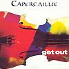

Celtic Lyrics Corner
>
Artists & Groups
>
Capercaillie
> Get Out

Get Out
(1992)
Tracks
:
1.
Waiting For The Wheel To Turn ('92 Version)
2.
Pige Ruadh (Live)
3.
Dean Cadalan Sàmhach/Servant To The Slave ('92 Version)
4. Silver Spear Reels (Live)
5.
Outlaws (Live)
6.
Coisich A' Rùin (Live)
7.
Fear A' Bhàta (Original Version)
8. Dr. MacPhail's Trance ('92 Version)
The 1999 re-issue of
Get Out
includes five bonus tracks:
9.
Distant Hill
10. The Reel Northern Light
11.
Mo Bhean Chomuinn
12.
A Cur Nan Gobhar As A' Chreig
13. Shanbally Castle/Caberfeidh